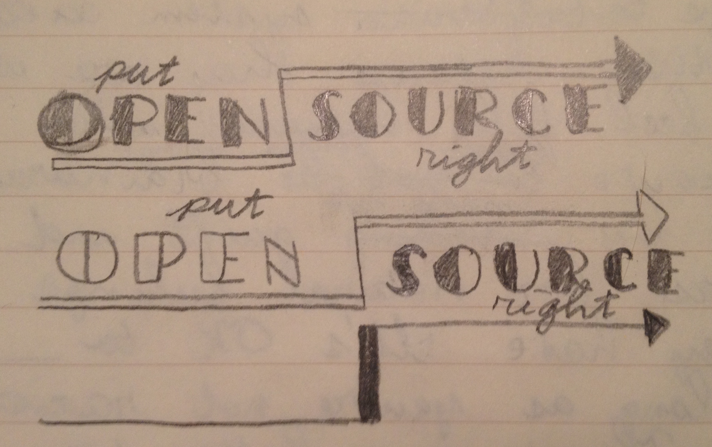

## 29 February
Today I was implementing the hot reload, using the strategy outline yesterday. It worked out pretty well without any problems. Instead of updating all methods of a class, we can iterate through all `getOwnProperyNames` of the new prototype to compare older methods with newer ones, and replace only those that differ. Same works for exported functions.
Later on I was thinking about a slogan for a campaign against degeneration of Open Source. I've finally come up to understand the problem, that Open Source has become unbearably leftist. Internet is a haven for left wing where all they do is talk about their community yet with complete lack of quality of work. Then like truly totalitarian regime they get together to silence everyone who undermines their newly established position of power. It's messed up, I don't understand how humans can be so stupid. There's inclusitity, which is one thing, and there's left which is illiberal themselves as they only "help" those, so that they can appear good. Nothing prevents conservatives to be inclusive, on the contrary, they have enough decency to respect other people because of their innate inner strength, and not because some code of conduct said so. We also not afraid to say things as they are, yet it is the left who impair freedom of speech, when it's not comfortable for them.
This whole theme is going along the lines of Nietzsche's hypothesis of transvaluation of values:
Yet the method was only appropriate to a nation of priests, to a nation of the most jealously nursed priestly revengefulness. It was the Jews who, in opposition to the aristocratic equation (good = aristocratic = beautiful = happy = loved by the gods), dared with a terrifying logic to suggest the contrary equation, and indeed to maintain with the teeth of the most profound hatred (the hatred of weakness) this contrary equation, namely, "the wretched are alone the good; the poor, the weak, the lowly, are alone the good; the suffering, the needy, the sick, the loathsome, are the only ones who are pious, the only ones who are blessed, for them alone is salvation—but you, on the other hand, you aristocrats, you men of power, you are to all eternity the evil, the horrible, the covetous, the insatiate, the godless; eternally also shall you be the unblessed, the cursed, the damned!"
Leftism is the most annoying thing in the world and it should be stopped. Yet I guess it's what people like, and you can't change it. But online, this is the direction where they've taken Open Source, because there's no one preventing this. There's no elections and no campaigns. They've proclaimed themselves leaders and think it's how things should be but it isn't. If they didn't harm Software Engineering and JavaScript, they can do whatever they wanted to, but they are directly involved there and call themselves software engineers "evolving javascript". Who gave them the right?

The message is to restore Open Source's values. Transvaluation is Nietzsche's concept however the word is too complex, and he used it more in a negative sense, as to the crime that priests committed against humanity. Re-evaluation is an alternative, but it doesn't enough meaning as to re-evaluate into what. Another one is "patch up Open Source" which has good a nice pun, but it patch up is applicable either to relationships, or to repairing something but not very well. *Put Open Source Right* is 100% perfect, as we're fixing it's values, and fighting the leftism that has come to be the driving force of it.
I like the logo also because it's got an arrow in Zig-Zag style, which is very art-deco. The inspiration came from this picture on unsplash by the term "right". It's good to search for inspiration I guess. It's also linking to Greek myths, which I'm reading now, where Zeus was throwing light bolts as his weapon, and Zeus is a 100% warrior type, strong and powerful. No wonder Nietzsche loved Greeks so much, for their ability to be in sync with their feelings and instincts, instead of self-hatred which the left imposes on humans today. It's proper brainwashing what they are doing, but we're gonna be the first to start talking about this in Open Source.

I was so excited about my first political slogan 😄 Art Deco is not just a development company, it's a PR company. So little people understand PR this days, especially in Open Source. They think that giving software for free, puts them above their users. Art Deco™: Premium Open Source®.